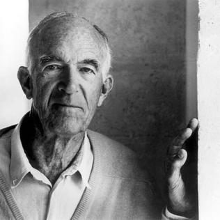

Jørn UtzonThe vernacular journey · China, 1958
Itinerary · 15 stays
Chronological axis of the journey
Historical documentation and reconstruction
Jørn Utzon (1918–2008) grew up in Aalborg, the son of a naval engineer, and trained at the Royal Danish Academy of Fine Arts in Copenhagen. Before 1958 he had already travelled in search of distant architectures: to Morocco in the late 1940s and to Mexico and the United States in 1949, where he showed great interest in vernacular architecture, especially in the first two destinations. In January 1957 he won the competition for the Sydney Opera House, which would become his best-known work.
The sources available for this reconstruction are photographs and Super 8 films held in The Utzon Archives, without precise dates, and Chiu’s reconstruction based on interviews, which establishes the sequence of cities visited, though not the exact dates.
The journey to China took place in 1958, when he was 40, at a decisive moment in his career. The Sydney competition had been won with very preliminary sketches and drawings, and the complex geometry of the roofs had not yet been resolved with sufficient precision, while the project was advancing at a very rapid pace under strong pressure from the Australian government. After months of working against the clock, Utzon travelled to Sydney in 1958 to present a progress report, known as the Red Book1. It was after that presentation, on his way back to Denmark, that he decided to travel for about two months through China with his friend, the Norwegian architect Geir Grung, who, when Utzon arrived, was being held by the Chinese authorities for having entered the country irregularly on a cargo plane2.
not reproduced in the web version.View at source ↗
Although it was not the first of his journeys in search of distant architectures, it is considered initiatory because of the threshold it marks in his career: it came as Utzon moved into professional maturity, with the most important work of his career about to begin, and it left a clear mark on his later architecture.
According to the estimated GIS reconstruction, Utzon entered China via Hong Kong at the beginning of April and headed for Beijing, where he spent nearly a month, roughly half the journey. From there he visited the Gobi Desert, Mount Song and the Datong caves —a sequence that, geographically, raises doubts the sources do not resolve— and continued inland through Xi’an, Chongqing and Chengdu. He then travelled east down the Yangtze, visited Nanjing, Suzhou and Hangzhou, and left again via Canton and Hong Kong at the beginning of June, returning to Copenhagen and Aalborg.
There is no material that allows Utzon and Grung’s itinerary through China to be dated precisely. The sequence of cities visited is known, thanks to information obtained through interviews with family and friends and to Chiu’s archival research3. The only firm data are that they entered and left via Hong Kong, that the stay in Beijing was prolonged —Utzon’s writings confirm that he was there on 1 May 1958, when he watched the Labour Day parade— and that one of the great episodes of the journey was the boat trip east down the Yangtze. The other dates on the chronological axis are estimates.
The motivation for the journey combines two factors. On the one hand, Chiu’s research suggests that Utzon was looking in China for solutions to the construction problem of the Opera House, steeping himself in traditional Asian building methods, a hypothesis consistent with the influence the journey would later have on his work and with his visits to Japan in those same years. On the other, Chiu attributes to Utzon a long-standing interest in China, awakened by his uncle, the sculptor Aksel Einar Utzon-Frank, who owned a copy of the Yingzao Fashi, the treatise that regulated the building methods and proportions of traditional Chinese architecture. His eldest son, Jan Utzon, explained it as follows:
not reproduced in the web version.View at source ↗
“My grand-uncle told my father to search for inspiration from the unknown Eastern cultures, instead of the West with which we were more familiar”4.
As for the record, the material available from the journey is essentially photographic, along with some films shot on Super 8.
The lack of drawn material and the analogue nature of the photographs and films make it extremely difficult to date the stay, since there is no record —neither dated notes, as on older journeys, nor metadata, as on more recent ones— that makes it easy to establish the place and time of each image.
There are also errors in the classification of The Utzon Archives5, which confuse photographs from the journey to Japan with those from the journey to China, as with the photographs of the Tōdai-ji temple in Nara, catalogued under the journey to China.
not reproduced in the web version.View at source ↗
Influence on later architecture
Utzon left only one explicit written reference to the influences he took from his journey to China: the inspiration of the Yungang caves, in Datong, for the Silkeborg museum project:
“The inspiration for the design of the museum comes from many different experiences, among them my visit to the Tatung [Datong] caves, west of Beijing, where hundreds of sculptures of Buddha and other figures are carved into caves cut into the rock on the bank of a river. These sculptures appear in every form, in contrast or in harmony with the space around them. The caves vary greatly in size, shape and lighting. The ancient Chinese sculptors experimented with every possibility, and the most fantastic thing is a cave almost entirely filled by a figure of Buddha with a face some seven metres high. Platforms joined by stairs allow visitors to walk around this gigantic figure and approach it.” (Jørn Utzon interview, Sydney, 2008; rendered here from the Spanish translation in the thesis)
not reproduced in the web version.View at source ↗
Chiu’s work6 explores other influences that Utzon may have incorporated into his work after the journey.
These hypotheses are based on his earlier study of his uncle’s copy of the Yingzao Fashi and on Utzon’s own purchase of two further copies in China. The study and application of solutions and techniques from the Chinese treatise can be traced in his later career.
In an interview conducted in Newcastle in 2009, Peter Myers and Richard Leplastrier, collaborators of Utzon, confirmed that, during the design and construction of the Opera House, the Yingzao Fashi was a document regularly consulted in the Sydney office.
Chiu argues that the construction solutions for the roofs —broken down into precast concrete pieces assembled to form structural ribs— and the Opera House’s acoustic ceilings, formed by plywood boxes also arranged in longitudinal ribs, are a direct legacy of the techniques the Yingzao Fashi sets out for forming traditional roofs and of its standardised timber jointing systems. This is supported by the similarity between several diagrams of timber joints in Chinese roofs and the structural ribs Utzon devised for his own.
Chiu also points to the similarity between the colour ranges Utzon proposed for the interior decoration of the major and minor halls and those the Chinese code stipulates for the decorative components of roofs.
Among the other mementoes Utzon brought back from China were two copies of the book Chinese Buddhist Monasteries, bought in Hong Kong. Chiu states that he found inside one of them a sketch of Utzon’s Bagsværd Church, which suggests that its composition may have been inspired by the monastery of Ch’i Yuan Ssu 祇園寺 (Zhiyuan).
not reproduced in the web version.View at source ↗
not reproduced in the web version.View at source ↗
not reproduced in the web version.View at source ↗
not reproduced in the web version.View at source ↗
not reproduced in the web version.View at source ↗
In addition, Kim Utzon, one of the architect’s sons and himself an architect, suggested that the second house his father designed in Mallorca, Can Feliz, has a plan inspired by the Taoist temple of Erwang.
In this house he applied devices that would become a constant of his career, such as the creation of a podium above which rises the powerful image of sloping roofs, generating a certain sense of lightness, as he sets out in one of the sketches of his manifesto “Platforms and Plateaus”.